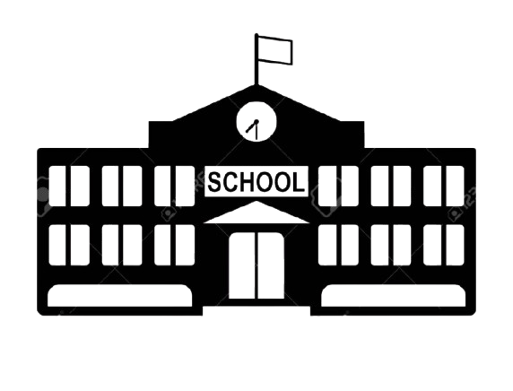
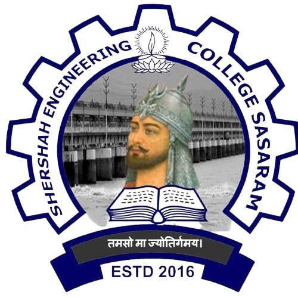

2016 - 2021
Jawahar Navodaya Vidyalaya, Sheikhpura (Class 6 to 10)
I successfully qualified the Jawahar Navodaya Vidyalaya Selection Test (JNVST) in Class 5 and secured admission in Jawahar Navodaya Vidyalaya (JNV), Sheikhpura.
From Class 6 to Class 10, I was a residential student, experiencing a holistic educational environment that emphasized both academics and personal development.
During my time at JNV, I actively participated in various school activities, including academic competitions, sports, and cultural events.
My years at Navodaya played a crucial role in shaping my discipline, adaptability, and leadership qualities.
2018 - 2019
House Captain – JNV Sheikhpura (Class 8)
In Class 8, I was entrusted with the responsibility of House Captain, a role that required leadership, time management, and interpersonal skills.
As House Captain, I managed the day-to-day affairs of hostel students from Classes 6 to 8.
This included maintaining discipline, coordinating study schedules, and organizing co-curricular and sports activities.
The experience not only boosted my confidence but also taught me the importance of teamwork, empathy, and accountability.

2021 - 2023
SADN +2 School, Sheikhpura (Class 11–12, PCM Stream)
After completing my 10th grade, I joined SADN +2 School in Sheikhpura in 2021 to pursue my senior secondary education with a focus on the Science stream (Physics, Chemistry, and Mathematics).
During my two years here, I deepened my understanding of core scientific concepts while also preparing for competitive engineering entrance examinations.
My time at SADN enhanced my analytical and problem-solving abilities and helped build a strong academic foundation in PCM subjects.

2024 - Present
Shershah Engineering College, Sasaram (B.Tech CSE, 2024–Present)
In 2024, I began my Bachelor of Technology (B.Tech) in Computer Science and Engineering at Shershah Engineering College, Sasaram.
Currently, I am in my 2nd semester. At this stage, I am focused on developing a strong grasp of programming languages, data structures, algorithms, and other foundational subjects in computer science.
I actively engage in coding, project-based learning, and group assignments that foster both technical and collaborative skills.
I aim to specialize further in areas like software development, artificial intelligence, or cybersecurity as my academic journey progresses.
Skill
Artificial Intelligence & Machine Learning
1. Machine Learning (ML) – Understanding of supervised, unsupervised, and basic algorithms like Linear Regression, Decision Trees, and K-Means.
2. Deep Learning (DL) – Basics of Neural Networks, Activation Functions, and Model Training.
3. Natural Language Processing (NLP) – Familiarity with text preprocessing, tokenization, and sentiment analysis. Tools & Libraries
1. NumPy – Data manipulation and preprocessing
2. TensorFlow – For training simple deep learning models
3. OpenCV – Computer vision basics
4. PyTorch - For training NN
Other Technical Tools
1. Jupyter Notebook / Google Colab – For writing and testing AI models interactively
2. Git & GitHub – Version control and collaboration on AI projects
Hobbies
What I Do When I’m Not Adulting. 😎
💻 I enjoy coding and solving complex programming challenges.
➕ I have a strong interest in mathematics and love solving logical problems.
🌔 I'm fascinated by astrophysics and enjoy learning about the universe.
✏️ I like sketching as a creative outlet.
📚 I'm an avid reader, especially of novels and poetry.
📝 I write poetry and am currently working on my own crime thriller novel.
🥊 I'm skilled in boxing and enjoy the discipline and focus it requires.
🛡️ I play kabaddi as a middle defender, where I combine strategy and strength.